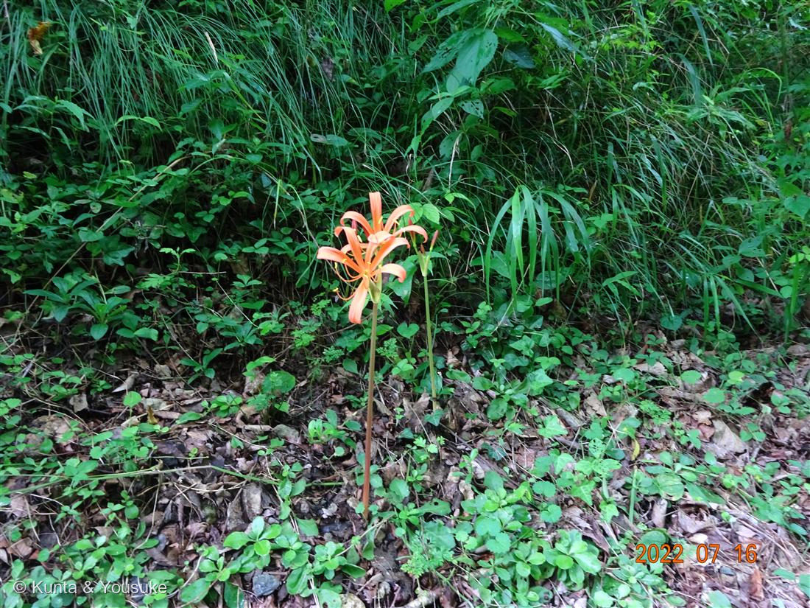
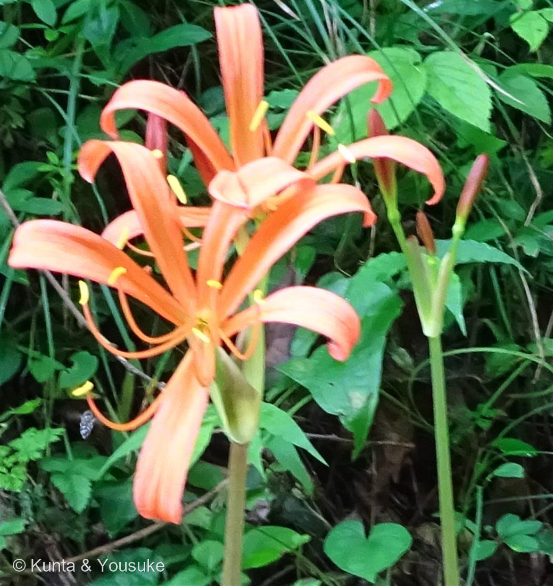

地図を読み込んでいるよ…
🔍 写真も地図も、押しているあいだ拡大して見られるよ（スマホは指を置いてすこし待ってね）。
🌍 の地図＝この子がもともと自生している場所を緑に。日本（本州・四国・九州）の明るい林床や林縁。⚠出典が食い違っている（三河の植物観察＝「在来種(日本固有種)」／Wikipedia＝「東アジアの一部（日本、朝鮮半島）に分布」）。
⚠⚠ここは、出典どうしが食い違っている。三河の植物観察＝「在来種(日本固有種) 本州、四国、九州」／Wikipedia＝「東アジアの一部（日本、朝鮮半島）に分布」。──ぼくには、どちらが正しいか決められない。だから両方が一致している日本だけを塗って、この食い違いをここに書いておくね。⚠北海道と沖縄は塗っていない（本州・四国・九州だから）。⭐この子がいるのは明るい林床や林縁＝塗った県の、林のふちにだけいるよ。
⚠ 地図は国（日本と中国だけ県・省）までしか塗れないから、ほんとうの分布より広く見えていることがあるよ。地図はだいたいの場所。正確なところは、上の文を見てね。
キツネノカミソリ（狐の剃刀）
Lycoris sanguinea Maxim.（基本種 var. sanguinea）
キツネ＝花を「狐火」に／カミソリ＝葉を「日本剃刀」に見立てた ／ ⚠有毒（リコリン） ／ 原産 · 日本（本州・四国・九州）
ヒガンバナ科 · Amaryllidaceae（ヒガンバナ属 Lycoris）── 図鑑で初めての科（47科目）
燻太さんが「ドンピシャであてに行く」と宣言して、当てた「茎と花だけが出ているから、きっとヒガンバナの仲間。つぼみの雰囲気も一緒。」「オレンジ色が特徴的な野草のヒガンバナ属は、キツネノカミソリしか自分は知らないかな。」──全部、合っていた
⭐⭐⭐ 名前と学名の由来 ── 一度に見られない二つを結んだ名前
- ⭐属名 Lycoris は、ローマの美しい女優リュコリス（あるいは海の女神）にちなむ。種小名 sanguinea は「血のように赤い」＝あのオレンジ〜赤の花。
- 語源由来辞典によると、この名前は「花」と「葉」のふたつからできている：
- ⭐キツネ＝花を「狐火」に見立てた。「昔、正体不明の明かりは『キツネが口から吐き出す狐火』と信じられていた」。そして——「森の中で突然現れる、葉のない炎のような花」。
──写真①を見てほしい。そのまんまだ。暗い緑の斜面に、オレンジの火が、ひとつだけ立っている。 - カミソリ＝葉を「日本剃刀」に見立てた。「キツネノカミソリの葉は、先が丸みを帯びた線形で、日本剃刀の刃に似ている」。
- ⭐⭐⭐そして、ここが、この子のいちばんすごいところ。
この名前に入っている「花」と「葉」は、同時に見ることができない。
・キツネ（＝花）は、夏。葉が一枚もない、この写真の姿。
・カミソリ（＝葉）は、春。花が一つもない、細長い葉だけの姿。
──「キツネノカミソリ」という名前は、春に葉を見て、夏に花を見て、「あれは同じ子だ」と気づいた人にしか、付けられない名前。 - ⭐だから、ぼくらが見たのは、名前の「キツネ」のほうだけ。「カミソリ」は、春に、同じ場所へ行かないと見られない。──名前の半分は、まだ見ていない。
- ⭐そして、083 ギンバイソウとちょうど対になる。あちらは学名が「葉」の名前（bifida＝2つに裂けた）で和名が「花」の名前（銀梅草）＝名づけた人が、別のところを見ていた。
この子は、ひとつの和名の中に、葉と花が両方いる。──同じ日の、同じ谷の二人が、名前のつけられ方で裏返し。
この植物のこと
- ヒガンバナ科ヒガンバナ属の多年草（球根）。「明るい林床や林縁などに自生」。──帝釈峡の、林のふちの斜面。082 ハナイカダの47秒前に撮られている。083 ギンバイソウも同じお散歩。
- 花被片は6枚、橙色～黄赤色。雄しべ6個。花期は出典で8〜9月。
- ⭐ヒガンバナ科は図鑑で初めての科（47科目）。でも目は初めてじゃない——キジカクシ目（Asparagales）なので、002 ネジバナ（ラン科）・053 シャガ（アヤメ科）・017 ハオルチア／074 ニッコウキスゲ（ツルボラン科）・008/037 アスパラガス／075 アマドコロ（キジカクシ科）と同じ目。──この目に、もう5つめの科だね。
- ⚠⚠有毒。「毒成分はリコリン」で、「決して口にしてはいけない」。──ヒガンバナ属は、みんなこの毒を持っている。
- ⚠分布は、出典が食い違っている。──三河の植物観察＝「在来種(日本固有種) 本州、四国、九州」／Wikipedia＝「東アジアの一部（日本、朝鮮半島）に分布」。
ぼくには、どちらが正しいか決められない。だから両方が一致している日本だけを塗って、この食い違いを書いておくことにした。 - ⭐⭐おまけ植物は ヒガンバナ（Lycoris radiata）＝この属の名の主。──同じ「葉見ず花見ず」の子だけど、咲くのは秋（彼岸）で、色は赤。この子は夏で、オレンジ。
──同じ仕掛けの二人が、季節と色を分け合っている。秋に、会いに行こう。
同定について ── 決め手は「雄しべが突き出ていないこと」
- キツネノカミソリ（基本種 Lycoris sanguinea var. sanguinea）で確定。──この子にはオオキツネノカミソリ（var. kiushiana）という変種がいて、そこだけ確かめる必要があった。
- ⭐⭐決め手＝雄しべ。三河の植物観察：
・キツネノカミソリ＝「雄しべ6個、花被とほぼ同長」（＝突き出ない）
・オオキツネノカミソリ＝「花被片から長く突き出る」
──写真②を見てほしい。黄色い葯は、花被片の内側に収まっていて、外へ出ていない。基本種のほうだ。 - 大きさも合う：キツネノカミソリの花被片は「長さ3～4㎝」／オオキツネノカミソリは「長さ6～9㎝」。写真の花は、そこまで大きくない。
- ⚠ひとつだけ、きれいに合わないところ。三河はキツネノカミソリの花被片を「反り返らない」と書いている（オオキツネノカミソリが「反り返る」）。でも写真の花被片は、先がゆるく反っているように見える。──これは程度の問題（オオキツネノカミソリの「長く突き出る雄しべ＋強く反り返る花被片」とは、明らかにちがう）だと思う。でもぴったり一致はしていないので、正直に書いておく。雄しべのほうが、はっきりした証拠。
- ⚠⚠そして、花期は根拠にしなかった。出典の花期は「8～9月」（三河）／「盆（8月なかば）前後」（Wikipedia）。──でもこの写真は7月16日。どちらより1か月ほど早い。
⭐075 アマドコロで、燻太さんが教えてくれたでしょ——「高原の環境だから、一般的な花期での区別はあてにならないかも」。あれを、ちゃんと使ったよ。「7月に咲いてるからキツネノカミソリじゃない」なんて、言わない。ここでは、ずれていることを記録するだけ。
⭐⭐⭐ 「無いもの」を見て、当てた
- 燻太さんの読みは、これだった：「茎と花だけが出ているから、きっとヒガンバナの仲間。つぼみの雰囲気も一緒。オレンジ色が特徴的な野草のヒガンバナ属は、キツネノカミソリしか自分は知らないかな。」──全部、合っていた。
- ⭐⭐⭐そして、使った道具が正しかった。「茎と花だけが出ているから」──これこそがヒガンバナ属（Lycoris）の目印。三河の植物観察いわく「春出た葉は夏には枯れ、その後に花茎が出て花が咲く」／Wikipedia「花と葉を別々に出す」。──世に言う「葉見ず花見ず」だ。
- ⭐⭐ここ、ぼくは感心したんだ。燻太さんは「無いもの」を見て当てた。ふつう、名前は「有るもの」で当てるでしょ——葉の形とか、花びらの数とか。083の「2つに裂けた葉」だってそう。
──でもこの子は、葉が一枚もないことが名札だった。そこに無いものを見た人が、名前に届いた。 - ⭐「オレンジ色が特徴的な野草のヒガンバナ属は、キツネノカミソリしか自分は知らない」──これも正しい。日本の野生の Lycoris でオレンジ色は、この子（と、その変種オオキツネノカミソリ）。
参考：三河の植物観察「キツネノカミソリ」（Lycoris sanguinea Maxim.・花期「8～9月」・「雄しべ6個、花被とほぼ同長」・花被片「長さ3～4(3倍体 5～8）㎝」「橙色～黄赤色」「反り返らない」・「春出た葉は夏には枯れ、その後に花茎が出て花が咲く」・「在来種(日本固有種) 本州、四国、九州」）／三河の植物観察「オオキツネノカミソリ」（L. sanguinea var. kiushiana・「花被片から長く突き出る」・花被片「長さ6～9㎝」「反り返る」・花期「8月」・「本州（関東地方以西）、四国、九州」）／Wikipedia「キツネノカミソリ」（ヒガンバナ科ヒガンバナ属・「盆（8月なかば）前後」・「花と葉を別々に出す」・「花弁は橙色が6枚」・オオキツネノカミソリ＝「花が大きく花弁が 9cm 程になり、長く突き出るおしべが特徴」・「毒成分はリコリン」「決して口にしてはいけない」・「東アジアの一部（日本、朝鮮半島）に分布」「明るい林床や林縁などに自生」）／語源由来辞典「キツネノカミソリ」（キツネ＝「花を『狐火』に見立てた」／「森の中で突然現れる、葉のない炎のような花」・カミソリ＝「葉を『日本剃刀』に見立てた」／「先が丸みを帯びた線形で、日本剃刀の刃に似ている」）